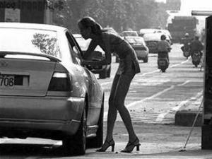

Tiền Phong - Đêm đó tôi đã để quên một thứ, là tấm ảnh hạnh phúc rạng ngời ngày lễ tốt nghiệp đại học, chụp cùng bạn bè trong sân trường Đại học Khoa học Xã hội Nhân văn tại TPHCM, trên mặt tủ nhỏ góc phòng. Chạy trốn, tôi phải chạy trốn.

Bán trầu ở thành phố Cơ Long (phía Bắc của Đài Bắc)
-Ẳnh: TL(Những ảnh minh họa trong bài được trích từ bộ ảnh nổi tiếng của Trương Càn Kỳ - Đài Loan)
Tôi cầm chiếc máy điện thoại trong tay, nghĩ hoài không ra một ai có thể gọi. Tôi gọi cho ai đây? Cho chồng, cho Nhan, cho Vân hay cho mẹ?
Những cô dâu ở Đài Loan ai cũng biết số điện thoại cầu cứu 119, nhưng thực mấy ai đã bấm hai phím ấy? Đường dây nóng nào hòa giải được số phận? Tổ chức nào của Đài Loan đẩy được sự nhơ nhớp này khỏi đời tôi?
Gọi cho Dương?
Ông lái taxi tốt bụng và thấu hiểu ấy liệu còn nhớ tôi là ai? Tôi bặm môi bấm hú họa, giọng nói vang lên trong đêm, tỉnh táo, như thể đang chờ tôi sẵn: "Xiao Yu, cô đang ở đâu?".
Dương lái xe trong đêm với tốc độ 130 km/giờ đến Phủ Li. Tôi cuống cuồng vơ áo quần, vật dụng nhét vào túi xách, rón rén đẩy cửa sắt bỏ chạy ra khỏi nhà trong đêm.
Cảm ơn những công ty nội thất Đài Loan thiết kế những cánh cửa chống trộm dày đặc khóa nhưng chủ nhà lại dễ dàng mở được bằng tay không, bằng những núm quay từ bên trong.
Đêm đó tôi đã để quên một thứ, là tấm ảnh hạnh phúc rạng ngời ngày lễ tốt nghiệp đại học, chụp cùng bạn bè trong sân trường Đại học Khoa học Xã hội Nhân văn tại TPHCM, trên mặt tủ nhỏ góc phòng. Chạy trốn, tôi phải chạy trốn.
Những bước chạy ngày càng chậm lại, đau khủng khiếp, mấy ngày gần như nằm trên giường, lết từ giường ra phòng tắm, giờ bỗng dưng cơ thể tôi rệu rã, như sắp sụp xuống.
Tôi lê bước rồi sụp xuống, trước cửa quán ăn Việt Nam trước ga, chỗ tôi đã dừng chân lúc mới tới đây, và ăn một bát phở đắng.
Bánh xe chiếc taxi phanh sát trước mặt tôi, Dương mở cửa xuống xe, quành về phía tôi đỡ dậy, hỏi:
- Cô sao vậy?
Lúc đó, nước mắt đau đớn nóng bỏng bật ra khỏi tôi như một dòng thác nhỏ.
Ngày hôm sau, Dương Lý Huy chở tôi đi khám, tôi bước đi rất khó khăn, người đau ê ẩm, như muốn sụp xuống. Tôi giấu Dương Lý Huy, không kể chút gì về địa ngục tôi vừa thoát ra, nhưng chắc ông ta cũng đoán biết phần nào.
Cửa các phòng vẫn mở hé, tôi rón rén nằm xuống bên người đàn ông, vô cùng sợ hãi ông sẽ hiểu lầm tôi. Chúng tôi cùng thao thức trong đêm, mỗi người theo đuổi một ý nghĩ khác nhau.
Ông không tò mò hỏi làm sao mới một thời gian ngắn tôi đã trở nên cùng kiệt như thế, ông chỉ chở tôi đi khám và đứng đợi ở cửa, nhìn tôi.
Bác sĩ nói tôi bị trật khớp xương hông, phải nghỉ ngơi nhiều.
Bác sĩ nói với Dương Lý Huy, làm chồng thì phải biết nâng niu vợ, yêu tới mức cô ta trật xương hông, ảnh hưởng sức khỏe và cả tâm lý cô ấy nữa. Rồi bác sĩ còn trách móc một tràng tiếng Đài rất nhanh, làm Dương đỏ mặt sượng trân, dìu tôi ra xe.
Trên đường chạy đi nhà thuốc, Dương Lý Huy im lặng. Tôi ngượng muốn độn thổ, ê chề, bị bóc trần ra bi kịch trong số phận mình, thứ mà tôi đã định sẽ giấu mãi mãi, sống để dạ chết mang theo.
Dương Lý Huy đưa tôi về căn nhà mới mua bằng tiền vay ngân hàng của hai bố con, con trai Dương đi mẫu giáo chưa về, Dương lúi húi nấu mì cho tôi ăn. Tắm xong, Dương ẵm tôi từ buồng tắm vào phòng ngủ.
Tôi nhắm mắt lại, nhưng Dương Lý Huy chỉ ẵm tôi nằm nghỉ, rồi ra ngoài đóng cửa. Ông đi kiếm tiền.
Người đàn ông tế nhị và chu toàn như thế, tại sao lại có số phận chẳng ra gì?
Con trai Dương đã bốn tuổi rưỡi, tên là Dương Lý Thích, hai năm không thấy mặt mẹ. Nó mập mạp chắc khỏe, hứa hẹn lớn lên sẽ cao to như cha. Nước da ngăm đen và đôi mắt hai mí là của mẹ Việt Nam.
Thích nghĩa là Thích Đức, tên đẹp hơn cha.
Nó không thắc mắc gì về sự xuất hiện của tôi từ đêm qua. Ý tứ, tối đó tôi sang phòng ngủ cùng Thích trên tấm đệm rộng rãi trải trên nền nhà.
Thích mân mê say sưa góc chéo gối, một cách cuống quýt và thích thú. Khi chìm vào giấc ngủ, hai ngón tay nó cứ xoa nắn mẩu vải bốn góc gối, ngủ rồi ngón tay còn vần vò khe khẽ. Khi hiểu ra, tôi trào nước mắt.
Tôi phát hiện ra bốn góc vỏ gối bé xíu và tròn trịa làm thằng bé con lai có cảm giác như chạm vào đầu tí mẹ. Không còn cái gì giống hơn và gần gũi hơn. Bốn góc gối mang cho nó cảm giác an toàn, bản năng, làm thỏa cơn thèm khát của một đứa trẻ con, còn mẹ nhưng đã mồ côi từ lâu.
Tôi khóc trong bóng đêm vì những cơn đau trong tim êm đềm, vì số phận đặt tôi trước những con người khác biệt, bị cuộc sống đầu độc, dày vò mà không nhận ra. Vì những ngón tay mân mê ngây thơ của đứa trẻ gợi lên cơn đau của một người mẹ.
Không chịu nổi sự ám ảnh, tôi gượng dậy lần đi sang phòng Dương Lý Huy. Cửa các phòng vẫn mở hé, tôi rón rén nằm xuống bên người đàn ông, vô cùng sợ hãi ông sẽ hiểu lầm tôi. Chúng tôi cùng thao thức trong đêm, mỗi người theo đuổi một ý nghĩ khác nhau.
Giữa người đàn ông Đài Loan và người đàn bà Việt cũng có một thứ gọi là tình bạn.
Trên đường đi, Dương Lý Huy thường dừng ở tiệm bán trầu cau ở ngã tư đường Trung Sơn mua hai trăm tệ tiền trầu, và thêm một lon cà phê sữa đá cho tôi. Ông nói, ông nghiện trầu cau khác nào tôi nghiện cà phê, ngày nào cũng phải có, thiếu là không được.
Tôi nói, cà phê là bạn của tôi suốt bốn năm đại học tại Việt Nam. Ông bảo, giá như tôi có một người vợ được học hành tử tế như cô, chắc đời tôi hạnh phúc hơn.
Tôi bảo, hạnh phúc hơn là sao?
Ông bảo, tôi quen vợ tôi khi đi chơi gái tại Campuchia. Khi đó mới hai mươi mấy tuổi, mấy anh em trong đội xe rủ nhau mua tour sang Campuchia du lịch.
Khi vào quán karaoke, tôi thấy một cô trẻ nhất, da đen nhưng mặt trắng bóc một lớp phấn dày, trông vừa quê mùa vừa tội nghiệp. Tôi bỏ tiền ra chuộc cô ấy về làm vợ.
Tôi không cần gái trinh, vì tôi cũng không phải đàn ông đồng trinh nữa. Tôi cần vợ, tôi nghĩ cô ấy từ lầm than sẽ trân trọng tôi.
Nhưng vợ tôi bị mẹ bán sang Campuchia lấy tiền chơi bạc, nên vợ tôi vốn đã có máu bài bạc của gia đình, làm tôi tán gia bại sản. Tôi cứ tưởng tấm lòng thành của tôi thay đổi được tính nết người ta.
Tôi nói, bằng cấp không quyết định hạnh phúc. Tôi thấy đời tôi đau khổ chỉ bởi cầm tấm bằng đại học trong tay, nên đặt mình ở vị trí cao trong đời, không chấp nhận thỏa hiệp với số phận.
Dương nói, không, tôi thấy cô hạnh phúc, ít nhất, cô mong muốn làm chủ đời cô, cô không chịu lệ thuộc ai, cô hiểu giá trị của cô, vì thế cô hiểu được giá trị của người khác.
Tôi mỉm cười, ông quá khen tôi. Chẳng qua là bởi bản thân ông cũng là một người tử tế.
Dương nói, tôi không tử tế đâu. Đêm qua, tôi rất muốn được ôm lấy cô, chỉ ôm thôi cũng được, nhưng tôi không dám.
Dương nói, tôi muốn ôm lấy cô, tôi cần hơi ấm chứ, tôi rất cần có bầu bạn, nhưng tôi sợ mất cô, sợ cô sẽ bỏ tôi mà đi. Sợ cô không còn coi tôi là bạn. Vì tôi biết cô rất tự trọng...
Đấy là chuyến đi chơi cuối cùng của tôi với Dương.
Một cô dâu bạn giới thiệu cho tôi một chỗ bán trầu cau trả lương rất cao, khoảng hai mươi lăm ngàn Đài tệ một tháng, lại bao ăn ở. Tôi xếp dọn đồ đạc vào túi xách, chào từ biệt hai bố con nhà Dương ra đi.
Dương đưa tôi ra tận ga Đài Trung, mua vé tàu cho tôi, và mua thêm một lon cà phê sữa đá. Ông nói, bao giờ quay lại đây, hãy đến thăm ông. Hoặc gọi điện thì ông sẽ ra tận cửa ga đón tôi.
Tôi bảo không cần phải thế đâu. Thời gian qua, ông đã giúp tôi bao nhiêu việc.
Dương nói, cô nên giữ gìn sức khỏe, không phải chỉ để cho cô mà còn phải cho đứa con cô đang ở Việt Nam. Nhớ để dành tiền, gửi vào ngân hàng chứ đừng mang khư khư theo người như thế.
Dương luôn cằn nhằn là tại sao người Việt Nam các cô mang nhiều tiền mặt trong người đến thế. Dương chu đáo quá làm tôi cứ thẫn thờ.
Trên chuyến tàu rời Đài Trung, giữa buổi trưa nắng đẹp, cây bên đường rì rào, những phong cảnh nối tiếp nhau như đang chạy ngược, tôi cầm lon cà phê ướp lạnh cho tới khi nó ấm lên trong đôi bàn tay.
Có lẽ đúng như Thán nói ngày xưa, đường phu thê của tôi nghiệp căn quá nặng, cho nên người đàn ông nào tới với tôi cũng sẽ mang tai họa tới...